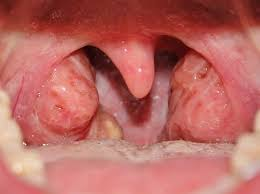

Amigdalitis

Descripción
La amigdalitis es una inflamación de una o ambas amígdalas, ubicadas en la pared lateral de la orofaringe y que poseen células relacionadas con la respuesta inmunológica del organismo, especialmente para la lucha en contra de las infecciones.
Causas
La causa de la amigdalitis suele ser una infección viral. Las infecciones bacterianas como la faringitis estreptocócica también pueden causar amigdalitis.
Síntomas
Los síntomas de amigdalitis incluyen:
- Dolor de garganta, que puede ser grave.
- Amígdalas rojas e hinchadas.
- Dificultad para tragar.
- Una capa blanca o amarilla sobre las amígdalas.
- Glándulas inflamadas en el cuello.
- Fiebre.
- Mal aliento.
Artículos Relacionados
Para buscar información en Google, haga clic en el siguiente enlace:
Artículo sobre AmigdalitisVideos Relacionados
Video explicativo de Amigdalitis:
Para volver a la página principal, pulsa aquí.